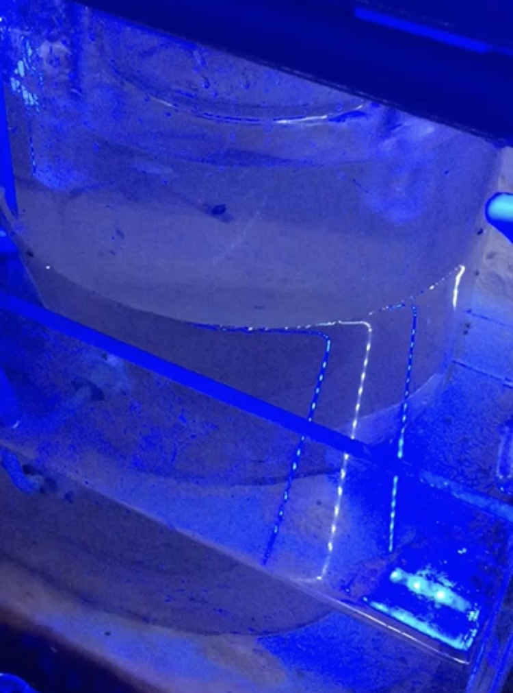

Ecological consequences of climatic forcing in the Arctic marine benthos
The combined efforts of this PhD thesis explores the magnitude, direction and context of biological responses to past, present and future climate change – and their concomitant effects on benthic ecosystem functioning in one of the world's most rapidly changing environments.
Learn more
Predicting Anthropogenic Impacts on Ecosystem Functioning using a Response-Effect Trait Framework
A scientific consortium seeking to address the status of the functional trait approach in marine benthic ecology.
Learn more

Communication of Climate Change impacts in the Arctic
An early career researcher consortium seeking to educate young audiences on local, regional and global threats of Arctic climate change via social media posts.
Flora and Fauna
The Ocean
Sea Ice
Glaciers

Building and enabling UK-Russian research capacity to address climate change effects on Arctic marine ecosystems
The Arctic region is undergoing some of the most rapid rates of change in the world in response to climatic forcing, with dramatic transformations underway in the flora and fauna of coastal Arctic habitats that will affect many ecosystem properties and the delivery of ecosystem services.
Learn more

Amundsen 2021 Expedition
Leg 2 – ROV Coral Seep Habitats / ArcticNet (15 July – 12 August) St. John’s to Iqaluit
Learn more

BLUEcoast
Experimental simulation of consecutive storms on coastal sediment integrity and biogeochemical cycling
Learn more

Changing Arctic Ocean Seafloor Cruise JR18006
A multidisciplinary team of like-minded polar benthic scientists collecting physical, chemical and biological samples across a gradient of sea-ice.
Learn more